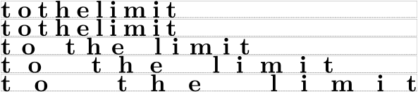
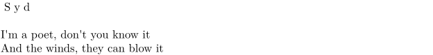

Contents
Summary
The command
\stretched
is used for inter-character spacing
Settings
Description
Use this command to change the inter-character spacing (known as tracking).
The \stretched command is actually just a frontend for the \kern command. And the value of factor isn’t multiplied by the kerning specified by the font, but rather added to it. So, to decrease the distance between characters, factor should be negative. And to increase it, factor should be positive.
Examples
Example 1
-
\ruledhbox{\stretched[width=2cm]{\bfd to the limit}} \ruledhbox{\stretched[width=4cm]{\bfd to the limit}} \ruledhbox{\stretched[width=6cm]{\bfd to the limit}} \ruledhbox{\stretched[width=8cm]{\bfd to the limit}} \ruledhbox{\stretched[width=10cm]{\bfd to the limit}}
- 
Give the title of a poem the same appearance as its text has, but stretched
-
\setupstretched[factor=0.3] %the higher the number, the more the stretch \setuphead[title][ style=\tf, ] \stretched{\title{Syd}} \blank[line] % one blank line I'm a poet, don't you know it \crlf And the winds, they can blow it
- 